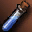

Крафт Draconic Bow в Lineage 2 Interlude
Рецепт и материалы
на 1 попыткуDraconic Bow — оружие S-грейда в Lineage 2 Interlude. Крафтится по рецепту Recipe: Draconic Bow (60%) с шансом 60%. Уровень Create Item — 9, требуется 225 MP. Рецепт расходуется при каждой попытке — как и материалы.
При провале теряются все материалы и рецепт (если он расходуемый). Каждая попытка независима: предыдущие успехи или провалы не меняют шанс следующей.
Сколько попыток и ресурсов
математика шансаБазовые ресурсы с промежуточными крафтами
| Материал | На 1 попытку | На 1 успех | На 95% |
|---|---|---|---|
| 13 650 | 22 750 | 54 600 | |
| 7 580 | 12 633,33 | 30 320 | |
| 7 500 | 12 500 | 30 000 | |
| 5 115 | 8 525 | 20 460 | |
| 1 125 | 1 875 | 4 500 | |
| 675 | 1 125 | 2 700 | |
| 675 | 1 125 | 2 700 | |
| 455 | 758,33 | 1 820 | |
Crystal: S Grade |
212 | 353,33 | 848 |
| 80 | 133,33 | 320 | |
 Mold Hardener |
80 | 133,33 | 320 |
| 75 | 125 | 300 | |
| 75 | 125 | 300 | |
Gemstone S |
43 | 71,67 | 172 |
| 40 | 66,67 | 160 | |
| 17 | 28,33 | 68 | |
Recipe: Draconic Bow (60%) |
1 | 1,67 | 4 |
Колонка «на 95%» — сколько материалов нужно, чтобы с вероятностью 95% получить хотя бы один предмет. Расчёт предполагает независимые попытки и фиксированный шанс 60%.
Материалы на разное число попыток
без гарантии| Попыток | Материалов | Ожидаемо успехов | Шанс хотя бы одного |
|---|---|---|---|
| 1 | 952 | 0,6 | 60,00% |
| 5 | 4 760 | 3 | 98,98% |
| 10 | 9 520 | 6 | 99,99% |
| 25 | 23 800 | 15 | 100% |
| 100 | 95 200 | 60 | 100% |
Шанс не накапливается: даже после 10 провалов следующая попытка всё равно имеет 60%. Таблица показывает только вероятность получить хотя бы один предмет за серию независимых попыток.
Как крафтить Draconic Bow
Create Item- Соберите 9 позиций материалов: 952 предмета на одну попытку.
- Изучите рецепт Recipe: Draconic Bow (60%). Для крафта нужен уровень Create Item 9 и 225 MP.
- Используйте умение Create Item. Шанс успеха — 60%, каждая попытка независима.
- При успехе получите 1 предмет Draconic Bow. При провале материалы и расходуемый рецепт пропадут.
В симуляторе можно проверить серию попыток: одиночный крафт, ×10, ×100 или режим «До успеха». Статистика сохраняется в браузере и показывает фактический процент успеха.
Другие рецепты
Оружие · SЧастые вопросы
FAQКакой шанс крафта Draconic Bow?
Шанс успеха — 60%. Это независимая попытка: каждый крафт не зависит от предыдущих.
Сколько материалов нужно на Draconic Bow?
На одну попытку нужно 9 позиций и 952 предмета суммарно. С промежуточными крафтами раскрывается 17 видов базовых ресурсов.
Сколько попыток в среднем нужно для крафта Draconic Bow?
При шансе 60% в среднем нужно 1,67 попытки, медиана — 1, для 95% вероятности — 4 попытки.
Расходуется ли рецепт Draconic Bow?
Да, рецепт расходуется при каждой попытке. При провале материалы и рецепт пропадают.
Можно ли гарантированно скрафтить Draconic Bow?
Нет. Шанс 60% фиксирован и не растёт от количества попыток. Для 95% вероятности нужно 4 попытки, но абсолютной гарантии не существует.